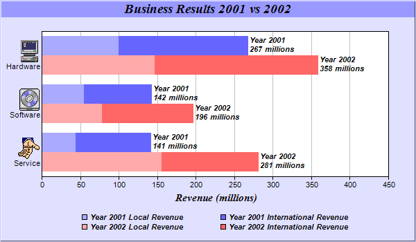

This example demonstrates combining multi-bar style with stacked bar style. It also demonstrates drawing horizontal bar charts, using icons in axis labels with
CDML, customizing legend and bar labels, controlling bar widths and centering legend box.
A multi-stacked bar chart combines the multi-bar style with the stacked bar style by allowing each bar in a multi-bar chart to be a stacked bar. This provides two levels of data grouping. The data from the data sets are clusters based on their index position. Within each cluster, the data are grouped again to form stack bars.
The standard multi-bar chart provides the first level of grouping. The
Layer.addDataGroup method is used to provide the second level of grouping.
The key features demonstrated in this example are:
The following is the command line version of the code in "cppdemo/multistackbar". The MFC version of the code is in "mfcdemo/mfcdemo". The Qt Widgets version of the code is in "qtdemo/qtdemo". The QML/Qt Quick version of the code is in "qmldemo/qmldemo".
#include "chartdir.h"
int main(int argc, char *argv[])
{
// The data for the bar chart
double data0[] = {44, 55, 100};
const int data0_size = (int)(sizeof(data0)/sizeof(*data0));
double data1[] = {97, 87, 167};
const int data1_size = (int)(sizeof(data1)/sizeof(*data1));
double data2[] = {156, 78, 147};
const int data2_size = (int)(sizeof(data2)/sizeof(*data2));
double data3[] = {125, 118, 211};
const int data3_size = (int)(sizeof(data3)/sizeof(*data3));
// The labels for the bar chart. The labels contains embedded images as icons.
const char* labels[] = {"<*img=service.png*><*br*>Service",
"<*img=software.png*><*br*>Software", "<*img=computer.png*><*br*>Hardware"};
const int labels_size = (int)(sizeof(labels)/sizeof(*labels));
// Create a XYChart object of size 600 x 350 pixels, using 0xe0e0ff as the background color,
// 0xccccff as the border color, with 1 pixel 3D border effect.
XYChart* c = new XYChart(600, 350, 0xe0e0ff, 0xccccff, 1);
// Add a title to the chart using 14 points Times Bold Itatic font and light blue (0x9999ff) as
// the background color
c->addTitle("Business Results 2001 vs 2002", "Times New Roman Bold Italic", 14)->setBackground(
0x9999ff);
// Set the plotarea at (60, 45) and of size 500 x 210 pixels, using white (0xffffff) as the
// background
c->setPlotArea(60, 45, 500, 210, 0xffffff);
// Swap the x and y axes to create a horizontal bar chart
c->swapXY();
// Add a title to the y axis using 11 pt Times Bold Italic as font
c->yAxis()->setTitle("Revenue (millions)", "Times New Roman Bold Italic", 11);
// Set the labels on the x axis
c->xAxis()->setLabels(StringArray(labels, labels_size));
// Disable x-axis ticks by setting the tick length to 0
c->xAxis()->setTickLength(0);
// Add a stacked bar layer to the chart
BarLayer* layer = c->addBarLayer(Chart::Stack);
// Add the first two data sets to the chart as a stacked bar group
layer->addDataGroup("2001");
layer->addDataSet(DoubleArray(data0, data0_size), 0xaaaaff, "Local");
layer->addDataSet(DoubleArray(data1, data1_size), 0x6666ff, "International");
// Add the remaining data sets to the chart as another stacked bar group
layer->addDataGroup("2002");
layer->addDataSet(DoubleArray(data2, data2_size), 0xffaaaa, "Local");
layer->addDataSet(DoubleArray(data3, data3_size), 0xff6666, "International");
// Set the sub-bar gap to 0, so there is no gap between stacked bars with a group
layer->setBarGap(0.2, 0);
// Set the bar border to transparent
layer->setBorderColor(Chart::Transparent);
// Set the aggregate label format
layer->setAggregateLabelFormat("Year {dataGroupName}\n{value} millions");
// Set the aggregate label font to 8 point Arial Bold Italic
layer->setAggregateLabelStyle("Arial Bold Italic", 8);
// Reverse 20% space at the right during auto-scaling to allow space for the aggregate bar
// labels
c->yAxis()->setAutoScale(0.2);
// Add a legend box at (310, 300) using TopCenter alignment, with 2 column grid layout, and use
// 8pt Arial Bold Italic as font
LegendBox* legendBox = c->addLegend2(310, 300, 2, "Arial Bold Italic", 8);
legendBox->setAlignment(Chart::TopCenter);
// Set the format of the text displayed in the legend box
legendBox->setText("Year {dataGroupName} {dataSetName} Revenue");
// Set the background and border of the legend box to transparent
legendBox->setBackground(Chart::Transparent, Chart::Transparent);
// Output the chart
c->makeChart("multistackbar.png");
//free up resources
delete c;
return 0;
}
© 2023 Advanced Software Engineering Limited. All rights reserved.